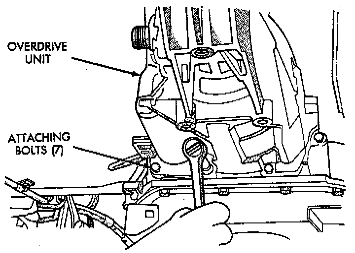
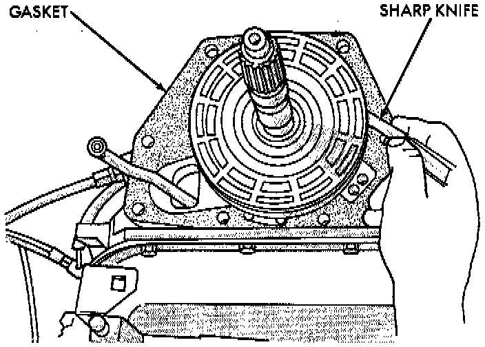
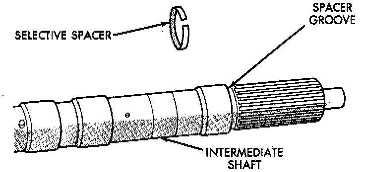

Replacement
REMOVAL1. Shift transmission into Park.
2. Raise vehicle.
3. Mark propeller shaft universal joint(s) and axle pinion yoke for alignment reference at installation.
4. Disconnect and remove propeller shaft(s).
5. Remove transmission oil pan, remove gasket, drain oil and reinstall pan.
6. If overdrive unit had malfunctioned, or if fluid is contaminated, remove entire transmission. If diagnosis indicated overdrive problems only, remove just the overdrive unit.
7. Support transmission with transmission jack.
8. Remove rear crossmember.
9. Remove vehicle speed sensor and speedometer adapter, if necessary.

10. Remove bolts attaching overdrive unit to transmission.
CAUTION: Support the overdrive unit with a jack before moving it rearward. This is necessary to prevent damaging the intermediate shaft. Do not allow the shaft to support the entire weight of the overdrive unit.
11. Carefully work overdrive unit off intermediate shaft. Do not tilt unit during removal. Keep it as level as possible.
a. If overdrive unit does not require service, immediately insert Alignment Tool 6227-2, or equivalent in splines of planetary gear and overrunning clutch to prevent splines from rotating out of alignment. If misalignment occurs, overdrive unit will have to be disassembled in order to realign splines.
b. If overdrive unit requires service, refer to Overhaul.
12. Remove and retain overdrive piston thrust bearing. Bearing may remain on piston or in clutch hub during removal.
13. Position drain pan on workbench.
14. Place overdrive unit over drain pan. Tilt unit to drain residual fluid from case.
15. Examine fluid for clutch material or metal fragments. If fluid contains these items, overhaul will be necessary.
16. If overdrive unit does not require any service, leave alignment tool in position. Tool will prevent accidental misalignment of planetary gear and overrunning clutch splines.
INSTALLATION
1. Be sure overdrive unit Alignment Tool 6227-2, or equivalent is fully seated before moving unit. If tool is not seated and gear splines rotate out of alignment, overdrive unit will have to be disassembled in order to realign splines.
2. If overdrive piston retainer was not removed during service and original case gasket is no longer reusable, prepare new gasket by trimming it.

3. Cut out old case gasket around piston retainer with razor knife.
4. Use old gasket as template and trim new gasket to fit.
5. Position new gasket over piston retainer and on transmission case. Use petroleum jelly to hold gasket in place if necessary. Do not use any type of sealer to secure gasket. Use petroleum jelly only.

6. Install selective spacer on intermediate shaft, if removed. Spacer goes in groove just rearward of shaft rear splines.
7. Install thrust bearing in overdrive unit sliding hub. Use petroleum jelly to hold bearing in position.
CAUTION: Be sure the shoulder on the inside diameter of the bearing is facing forward.
8. Verify that splines in overdrive planetary gear and overrunning clutch hub are aligned with Alignment Tool 6227-2, or equivalent. Overdrive unit cannot be installed if splines are not aligned. If splines have rotated out of alignment, unit will have to be disassembled to realign splines.
9. Carefully slide Alignment Tool 6227-2, or equivalent out of overdrive planetary gear and overrunning clutch splines.
10. Raise overdrive unit and carefully slide it straight onto intermediate shaft. Insert park rod into park lock reaction plug at same time. Avoid tilting overdrive during installation as this could cause planetary gear and overrunning clutch splines to rotate out of alignment. If this occurs, it will be necessary to remove and disassemble overdrive unit to realign splines.
11. Align slip-fit governor tubes and work overdrive unit forward on intermediate shaft until seated against transmission case.
12. Install bolts attaching overdrive unit to transmission unit. Tighten bolts in diagonal pattern to 34 Nm (25 ft. lbs).
13. Install crossmember.
14. Install speed sensor and speedometer adapter. Be sure to index adapter.
15. Connect speed sensor and overdrive wires.
16. Align and install propeller shaft.
17. If valve body was also removed, adjust bands, install valve body and install transmission oil pan and gasket.